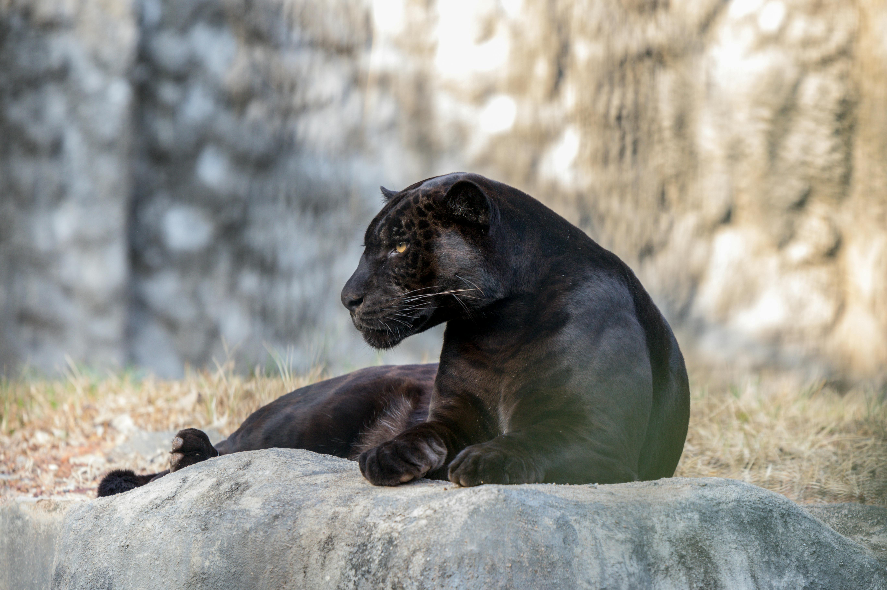

Panther
About the Panther
The panther is a large, powerful, and cunning feline that is found in the Americas, Asia, and Africa. It is not a distinct species itself, but is the general name used to refer to any black colored feline of the Big Cat family, most notably Leopards and Jaguars. The Panther is an elusive and powerful animal that has adapted well to a variety of habitats around the world, and is known to be one of the strongest climbers of all felines. Although the Panther is not technically classified as a separate species, they are considered to be endangered by many due to the declining numbers of both Leopards and Jaguars throughout much of their natural ranges.